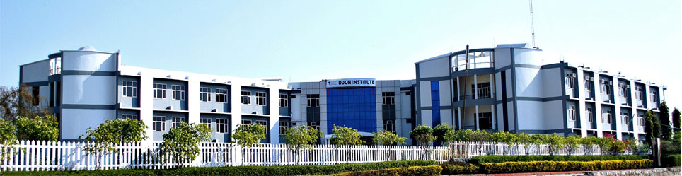
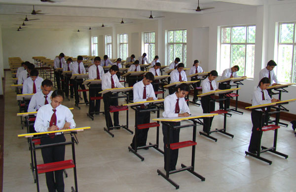

Doon Institute is situated in Shyampur at 9th Milestone on the Haridwar-Rishikesh highway. The campus is easily accessible by public transport and is a mere 15 minute drive from downtown Rishikesh/ Haridwar and just under an hour from Dehra Dun. The imposing 15 acres of green campus boasts of airy and well-lit roomy classrooms, finest laboratories and workshops, a modern computer centre, a library endowed with relevant titles and the administrative block.
The Institute designed with fountains and has been aesthetically large landscaped lawns & gardens. With this entire infrastructure in place, the institute is strongly committed to provide quality education to its students. Incorporation of the latest in Information Technology ensures that students have access to library and computing facilities of the highest quality, with an array of networked computers, LCD Monitors, subject-specific software and access to the Internet and intranet.
Though theoretical inputs are essential to any educational programme, our stress is on the overall development of the individual. Now a days, technological changes and innovations are fast transforming the very basis of the concept of technical education.
Today, what one needs is the skill to manage technical and managerial resources efficiently. In order to make the learning process highly integrated, the syllabus is reviewed and analysed periodically to be in sync with the latest issues.
Our Institutes bring complex realities of today's technology into the classroom through the powerful medium of case studies; both real and simulated. It is an interactive process which stimulates the expertise and hidden potential of budding technocrats making them more confident to deal with practical problems of the corporate world. We have undertaken the task of developing comprehensive case studies in fundamental and functional management and technical areas
Lecture sessions are conducted with the help of modern teaching aids. Our Institutes are well equipped with LCD projectors, project slides, educational audio video cassettes, CDs, TVs and other gadgets that are essential for any first rate professional technical institute.